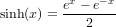
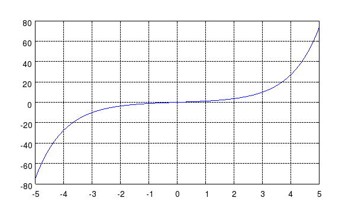

SINH Hyperbolic Sine Function
Section: Mathematical Functions
Usage
Computes the hyperbolic sine of the argument.
The syntax for its use is
y = sinh(x)
Function Internals
The sinh function is computed from the formula

Examples
Here is a simple plot of the hyperbolic sine function
--> x = linspace(-5,5);
--> plot(x,sinh(x)); grid('on');
